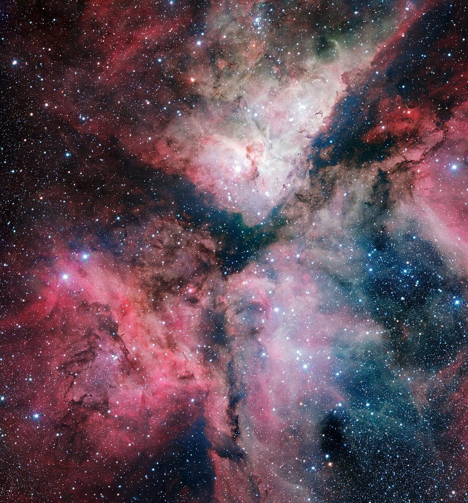
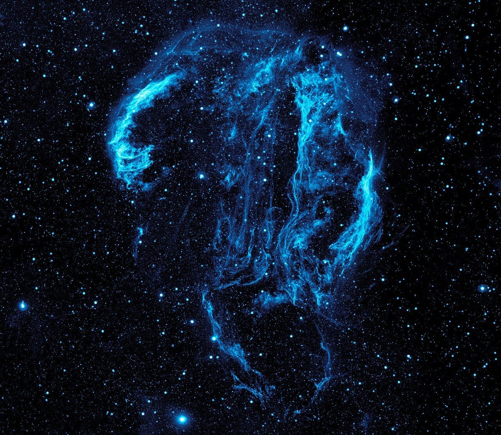

第3段 / STAGE 3
口コミ(イメージ例)
行ってみたい気持ちを、制作側が創作して書いたものです。
以下は制作側の創作で、実在のお客様の投稿ではありません。実際の口コミ・評価とは関係ありません。
営業時間などが分かったら、行ってみたいです。それまでは、Instagramの更新を楽しみにしています。
「Nest Space」という名前が気になっています。いつか行ってみたいので、まずはInstagramをのぞいてみたいです。
カフェでのんびり過ごす時間が好きなので、いつか行ってみたいと思っています。Instagramをのぞいてみるのが楽しみです。

